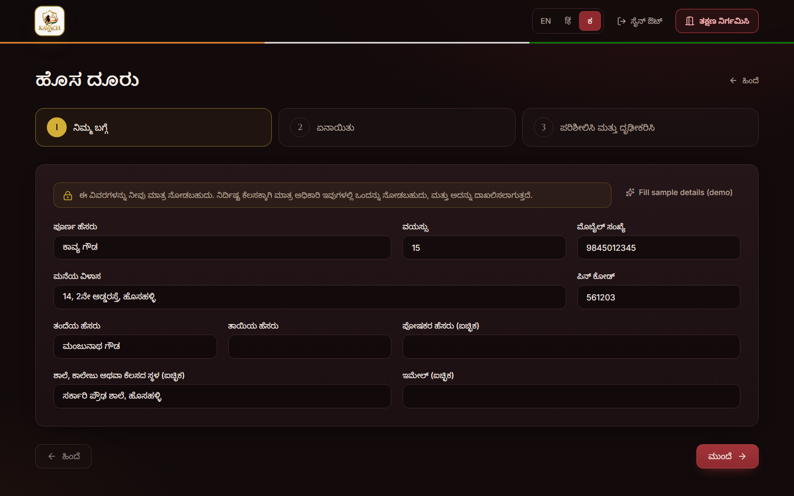
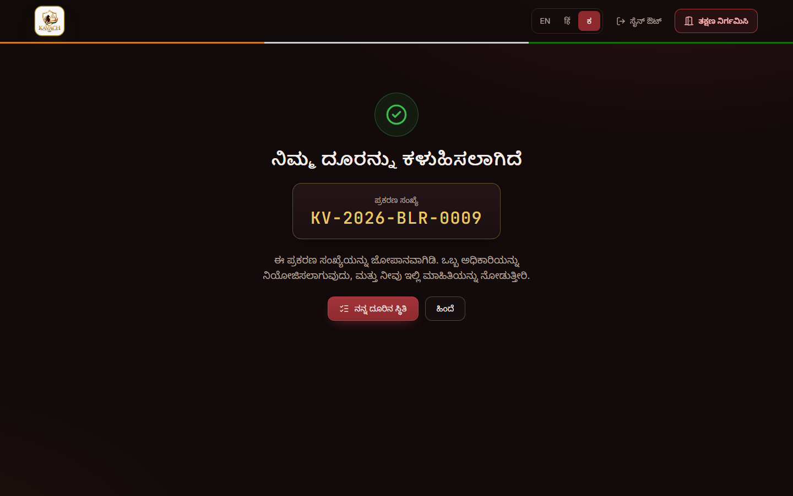
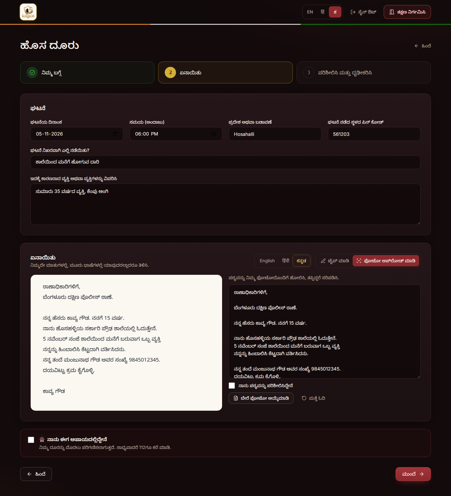
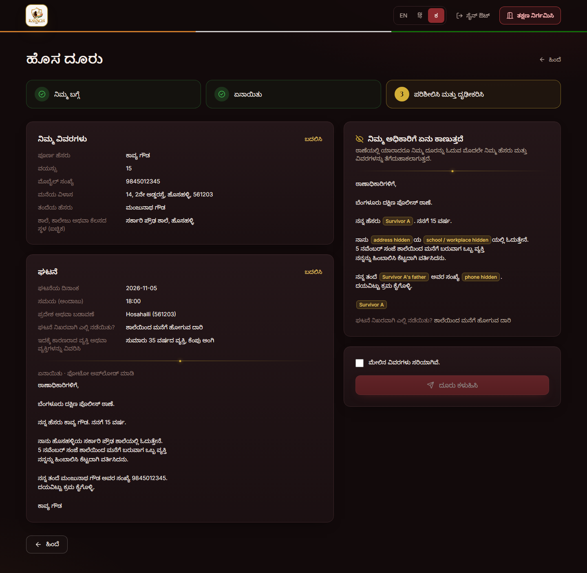
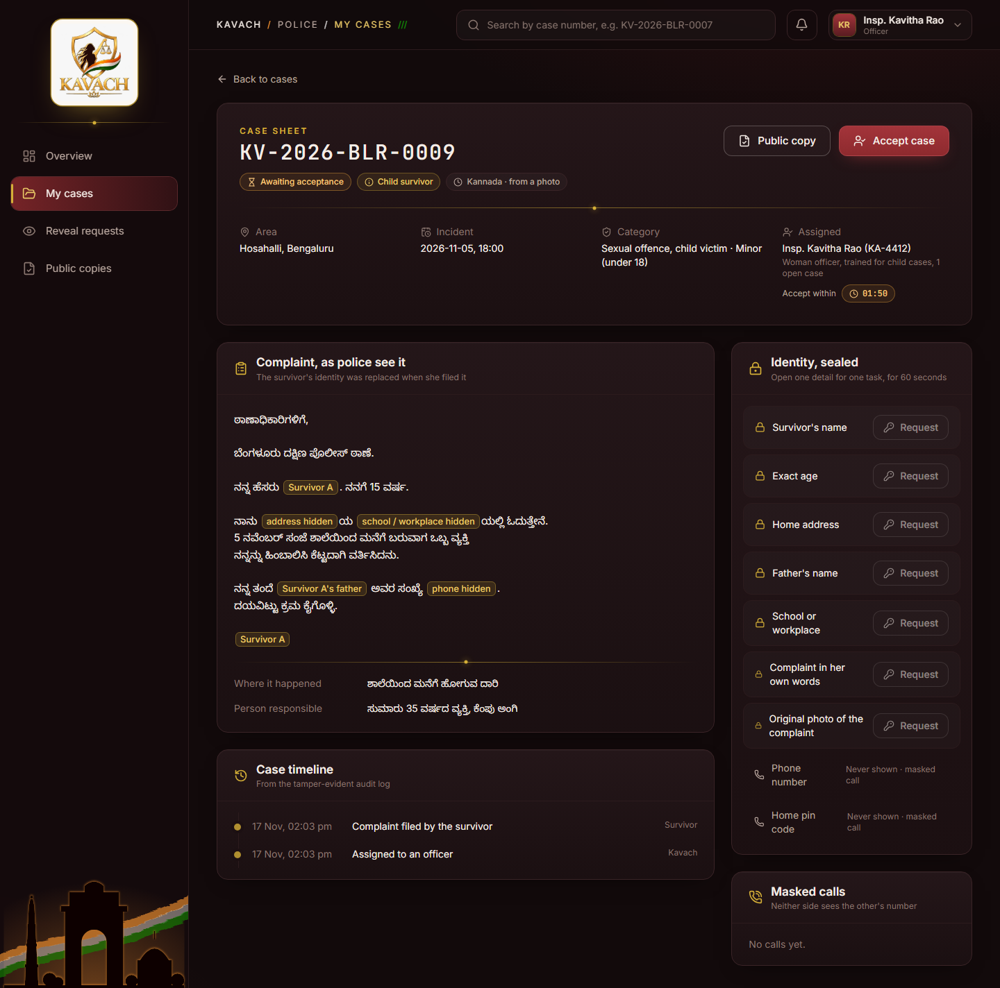
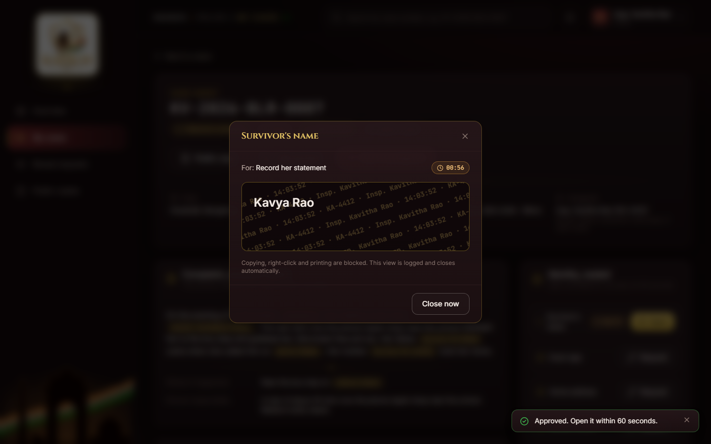
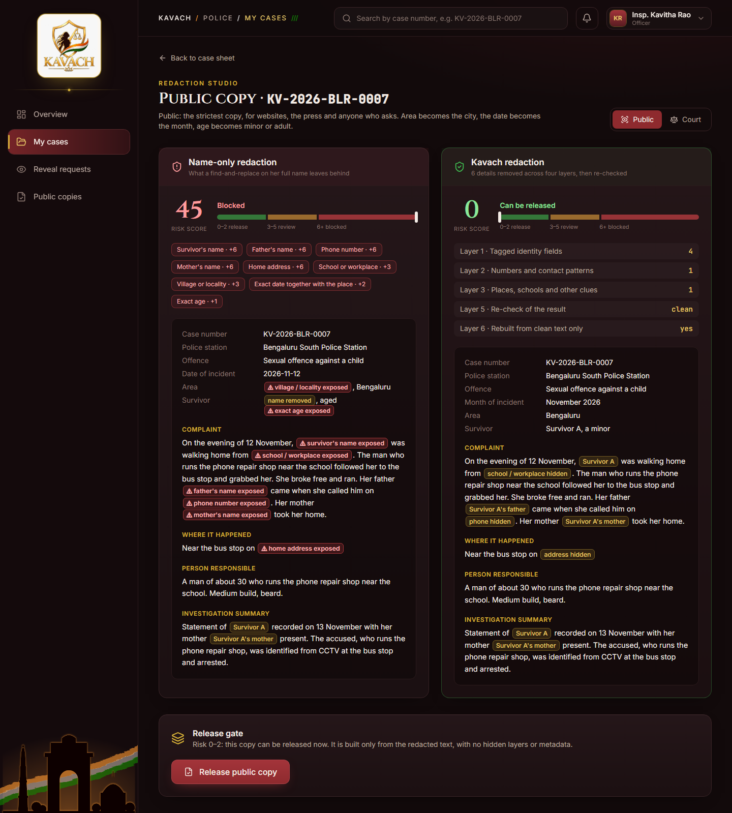
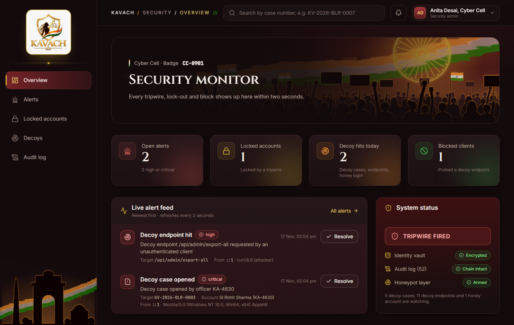
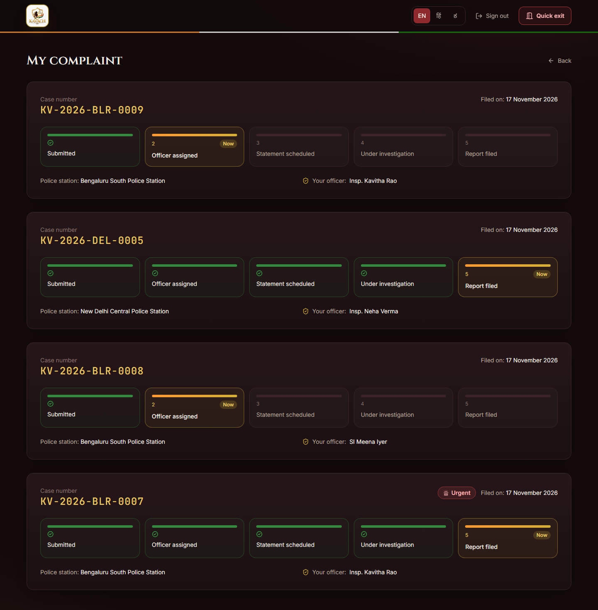

Kavach is finished for the hackathon. The 7-minute demo ran start to finish without touching code: a Kannada complaint photographed and read, routed to a child-trained woman officer, investigated and sealed, released as a public copy with risk 0, and a rogue officer and a probing script caught. On 90 new synthetic complaints, every planted identifier was removed when the survivor filled in the form. Without the form, 56 to 82 percent were, and that gap is reported as found.
The demo, run end to end
Everything below ran in a real browser against the running app, scripted exactly as a presenter would click. Nothing was edited between steps.
1. The survivor files in Kannada, from a photo


KV-2026-BLR-0009.

2. The officer works the case without her identity


3. The public copy

4. The honeypot catches an insider and a script


curl), one account locked, one client blocked, audit chain intact.
Measured: how much does the redaction catch?
90 synthetic complaints (30 each in English, Hindi and Kannada) were written for this test from new templates and new invented people, schools, villages and numbers. None were used to tune the rules, and the results below are reported as measured. "Removed" means the planted text is gone from the public copy. "Controls kept" counts ordinary case words that should survive, such as "bus stand", "the accused" and "ಆರೋಪಿ", and so shows any over-redaction.
When she fills in the form (the normal flow)
| Language | Name | Father | Mother | School | Village | Phone | Age | Overall | Controls kept |
|---|---|---|---|---|---|---|---|---|---|
| English | 100% | 100% | 100% | 100% | 100% | 100% | 100% | 100% | 100% |
| Hindi | 100% | 100% | 100% | 100% | 100% | 100% | 100% | 100% | 100% |
| Kannada | 100% | 100% | 100% | 100% | 100% | 100% | 100% | 100% | 100% |
This measures matching what she typed, in the same script. Real spelling variation (a nickname, a different transliteration) is not in this set.
With nothing in the form (worst case: rules only)
| Language | Name | Father | Mother | School | Village | Phone | Age | Overall | Controls kept |
|---|---|---|---|---|---|---|---|---|---|
| English | 33% | 100% | 100% | 100% | 50% | 100% | 100% | 82% | 100% |
| Hindi | 33% | 100% | 100% | 77% | 50% | 100% | 100% | 78% | 100% |
| Kannada | 33% | 0% | 0% | 67% | 75% | 100% | 100% | 56% | 100% |
What this says. Phone numbers and ages are always caught by pattern. A name is caught only when she introduces herself ("my name is…", in any of the three languages), not when it starts a sentence. Kannada relatives' names have no pattern yet. Some Hindi school names ("विद्या मंदिर") and villages without a telltale suffix slip through.
Why the design still holds. In Kavach the form is the normal path, and it tags her details at the source. Every public copy is re-scored with the same detector, medium risk goes to a supervisor, and Kavach never claims zero risk. The misses above are the next rules to write, and they should be checked on another new set rather than this one.
Added in this phase
| Change | Why |
|---|---|
| Self-introduced names in English, Hindi and Kannada | She may type her name in English in the form but write it in Kannada in a photographed complaint. "ನನ್ನ ಹೆಸರು …" now catches it, and then every other mention of it. |
| Kannada and Hindi word endings | "ಹೊಸಹಳ್ಳಿಯ" (of Hosahalli) was missed by exact matching; tagged values now match with an ending attached. |
Demo loader: python -m app.demo | Resets and loads three cases in three states (in progress, escalated, sealed with a released copy) while the server keeps running. |
| "Fill sample details" and "Use a sample page" (demo mode only) | Fills synthetic details and draws a sample complaint page in the chosen language, so OCR can be shown on stage with no prepared photo. |
Evaluation: python -m eval.evaluate | The measurement above; results saved to reports/eval-results.json. |
| README | How to run, demo accounts, the 7-minute demo step by step, what is where, and limits. |
The whole project
| # | Phase | Delivered | Checked |
|---|---|---|---|
| 1 | Foundation | FastAPI and SQLite, a field-by-field AES-256-GCM vault, OTP and two-factor sign-in, a hash-chained audit log | 13/13 checks |
| 2 | UI shell | Maroon, gold and tricolour design; hand-drawn crowd, flags, chakra and India Gate artwork; full-width layouts; logo unchanged | Screens at 1440 px and on phones |
| 3 | Survivor portal | Three-step form in 3 languages, photo OCR, "what your officer will see", tracker, quick exit | 2 complaints end to end |
| 4 | Police side | Allocation (women officers first), case sheet with "Survivor A", masked calls, 60-second watermarked reveals, seal on submission | 30/30 API checks |
| 5 | Redaction | Six-layer engine, risk-gated release, Redaction Studio, public and court copies, printable PDF | 16/16; PDF text clean |
| 6 | Honeypot | Decoy cases, decoy endpoints, honey credentials, wrong-case lock-out, rate limit, live security monitor | 22/22 attack checks |
| 7 | Demo and measurement | Demo loader, sample-page OCR, held-out evaluation, README, full run-through | Demo ran with no code edits |
Limits to say out loud
- Detection is rule-based. Without form details, names and places without a recognisable pattern can slip through (table above).
- A survivor's own complaint text can still show her exact age to the officer (for example "ನನಗೆ 15 ವರ್ಷ"). The case sheet itself shows only "minor" or "adult", and the public copy removes the age.
- OCR runs in the browser but downloads its engine and language data from a public CDN. It was tested on printed pages, not handwriting.
- Calls, SMS and OTP are simulated. There is no translation.
- On one demo machine all requests come from localhost, so blocked clients are also told apart by browser signature.
- The data is synthetic throughout. Real pilots need practitioners to review the synthetic set, and the legal questions parked at the start need answers.
Run it
Start kavach-api and kavach-web (or see the README), then run .venv\Scripts\python -m app.demo in kavach/backend and open http://localhost:5173. Staff password kavach@123; survivor phone 9000000001.